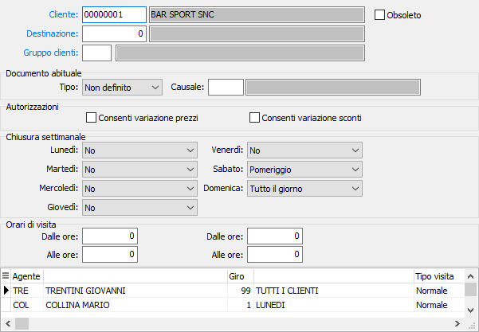

Clienti
La procedura consente di gestire l'anagrafica clienti di OS1Mobile; all’interno del modulo OS1Mobile i clienti sono impostati per destinazione e la destinazione 0 identifica l’anagrafica base; è possibile codificare solo le destinazioni di “Consegna merce”.
I dati del cliente possono essere inseriti anche in fase di caricamento di un cliente sull'anagrafica principale di OS1, al momento della conferma di un nuovo cliente viene effettuata la richiesta che se affermativa porta a questa finestra.

La gestione del Gruppo clienti permette di far proporre, nella gestione dei frequenti, l’ultimo prezzo applicato ad un articolo, ad un qualsiasi cliente che fa parte del gruppo e al quale è stato fatturato (o dal quale è stato ordinato) il prodotto; il campo può essere lasciato vuoto.
In relazione ai documenti che saranno inseriti dai dispositivi è possibile, per ogni cliente/destinazione, indicare il tipo di documento abituale e la relativa causale; inoltre è possibile configurare le autorizzazioni alla variazione dei prezzi ed alla variazione degli sconti.
Nello schema di CHIUSURA SETTIMANALE si possono indicare i giorni ed i relativi termini di chiusura; è inoltre possibile specificare gli orari di visita.
Nella parte finale della videata sono visualizzati i giri di visita in cui il cliente è presente.